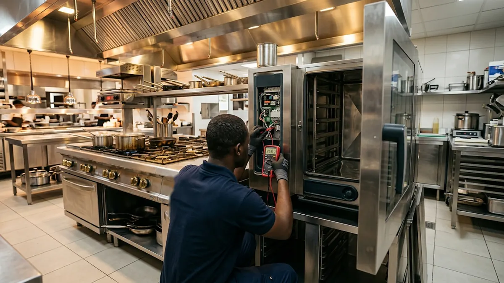

CHR — Restaurants, Hôtels, Boulangeries
Nous assurons l'entretien, la réparation et l'installation de vos fours, pianos de cuisson, hottes, friteuses et lave-vaisselle. Nous intervenons à Abidjan et, sur demande, dans le reste de la Côte d'Ivoire.

Nos interventions
Pour les restaurants, hôtels, boulangeries et traiteurs d'Abidjan
Installation, diagnostic et réparation de fours gaz ou électriques, de boulangerie, de pâtisserie et à pizza : résistances, brûleurs, thermostats, sole qui ne chauffe plus.
Installation, entretien et réparation de pianos de cuisson pour restaurants et hôtels : brûleurs, veilleuses, thermocouples, four intégré. Nous installons aussi les circuits gaz qui les alimentent.
Nettoyage, dégraissage, contrôle et réparation des hottes : moteur, filtres à graisse, extraction. Un dégraissage régulier limite l'accumulation de graisse.
Diagnostic et réparation de friteuses (chauffe, thermostats) et de lave-vaisselle professionnels (chauffe de l'eau, pompes, vidange).
Visites régulières pour contrôler vos équipements et repérer l'usure avant la panne, afin de limiter les arrêts en plein service.
Notre méthode
Écrivez-nous sur WhatsApp, avec une photo ou une vidéo de l'équipement, ou appelez-nous directement.
Un diagnostic honnête et un devis gratuit avant toute intervention, sans engagement.
Nous intervenons sur place, à Abidjan et, sur demande, ailleurs en Côte d'Ivoire.
Nous vérifions le bon fonctionnement de l'équipement avant de le remettre en service.
Questions fréquentes
Le coût dépend de l'équipement, de la panne et des pièces à remplacer. Nous établissons un devis gratuit après diagnostic sur place, ou d'après votre description envoyée par WhatsApp avec une photo ou une vidéo.
Cela peut venir d'un thermocouple encrassé ou usé, d'un brûleur encrassé ou d'une arrivée de gaz irrégulière. Ne forcez pas l'allumage. En cas d'odeur de gaz, fermez l'arrivée de gaz, aérez et n'allumez aucune flamme, puis faites vérifier l'appareil par un technicien.
Oui, c'est une bonne pratique : la graisse s'accumule dans les filtres et les conduits, et elle est inflammable. La fréquence dépend de votre activité, surtout avec beaucoup de friture ou de grillades. Pour vos obligations de sécurité incendie, renseignez-vous auprès de l'ONPC.
Les coupures et les variations de tension peuvent abîmer les cartes électroniques et les résistances. Une protection adaptée à l'appareil, comme un stabilisateur, aide à limiter les dégâts. Demandez conseil à un technicien pour choisir celle qui convient à votre installation.
Il prévoit des visites régulières pour vérifier vos fours, pianos de cuisson, hottes, friteuses et lave-vaisselle, afin de repérer les signes d'usure avant la panne. L'objectif est de limiter les arrêts de service imprévus.
Contact